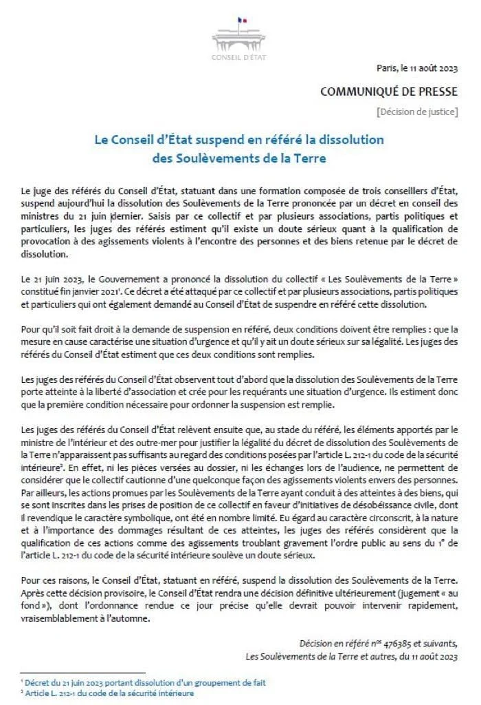

Publication relayée
Le Conseil d’État suspend la dissolution des Soulèvements de la Terre
Date indiquée par Facebook · 12 août 2023
Repères éditoriaux
Nous avons relayé le communiqué du Conseil d’État sur la suspension en référé du décret de dissolution, rendue le 11 août 2023.
Texte conservé avec la publication
Excellente nouvelle concernant les Soulèvements de la Terre: le Conseil d'État suspend en référé le décret de dissolution.
Belle victoire de l'État de droit face à l'autoritarisme de ce gouvernement. On ne dissout pas un soulèvement !

Sources
Archive rouge · export Facebook · AR-0002-FB-01602
À lire aussi · Décret de dissolution des Soulèvements de la Terre, réaction du PCF.